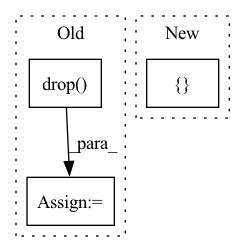

Pattern ID :25802
Before Change
column_counts: pd.Series = column_data.value_counts(dropna=False)
// Filter out values not in the nulls list
keys_to_drop = [key for key in column_counts.keys() if string_baseform(key) not in null_string_list]
null_counts = column_counts.drop(labels=keys_to_drop)
if null_counts.size < 2:
continue
// Save the column info
for key, count in null_counts.iteritems():After Change
for null_value, count in null_counts.items():
percent = count / len(column_data)
display_array.append([column_name, null_value, count, format_percent(percent)])
result_dict[column_name][null_value] = { "count": count, "percent": percent}
// Create dataframe to display table
if display_array:
df_graph = pd.DataFrame(display_array, columns=["Column Name", "Value", "Count", "Percent of data"])In pattern: SUPERPATTERN
Frequency: 4
Non-data size: 3
Instances Fragment ID: 78055463
Project Name: deepchecks/deepchecks
Commit Name: 1d39905057831b3c7c8f52b8a507d7f210a87003
Time: 2021-11-15
Author: matanper@gmail.com
File Name: mlchecks/checks/integrity/mixed_nulls.py
M Class Name: MixedNulls
N Class Name: MixedNulls
M Method Name: _mixed_nulls(3)
N Method Name: _mixed_nulls(3)
M Parent Class: SingleDatasetBaseCheck
N Parent Class: SingleDatasetBaseCheck
M File Name: mlchecks/checks/integrity/mixed_nulls.py
N File Name: mlchecks/checks/integrity/mixed_nulls.py
M Start Line: 97
M End Line: 130
N Start Line: 103
N End Line: 134
Before Change
embeddings = embeddings.reset_index(drop=True)
fit_sample = embeddings.sample(n=min(len(embeddings) ,fit_sample_size), random_state=17)
fit_sample = fit_sample.drop(["filepath", "Z", "Y", "X"], axis=1, errors="ignore")
all_data = embeddings.drop( ["filepath", "Z", "Y", "X"] ,axis=1, errors="ignore")
reducer = cuml.UMAP(
n_neighbors=200,
n_components=2,
n_epochs=None, // means automatic selectionAfter Change
embedding = reducer.fit(fit_sample)
fit_sample["umap_0"] = embedding.embedding_[:, 0]
fit_sample["umap_1"] = embedding.embedding_[:, 1]
umap_labels = fit_sample[[ "umap_0", "umap_1" Fragment ID: 78055472
Project Name: mpi-dortmund/tomotwin-cryoet
Commit Name: 338a176324507bf6b822967203644c3dca26bcb3
Time: 2023-02-10
Author: gavin.rice@mpi-dortmund.mpg.de
File Name: tomotwin/modules/tools/prepare_clustering_data.py
M Class Name: AnonimousClass
N Class Name: AnonimousClass
M Method Name: calculate_umap(4)
N Method Name: calculate_umap(3)
M Parent Class:
N Parent Class:
M File Name: tomotwin/modules/tools/prepare_clustering_data.py
N File Name: tomotwin/modules/tools/prepare_clustering_data.py
M Start Line: 30
M End Line: 57
N Start Line: 29
N End Line: 67
Before Change
def merge_features(embedding, other_features, full_targets):
df = pd.merge(embedding, other_features, left_index=True, right_index=True)
df = pd.merge(df, full_targets, left_index=True, right_index=True)
df = df.drop( ["index"], axis=1)
data_arr = df[df.columns[:-len(trait_labels)]].values
targets_arr = df[df.columns[-len(trait_labels):]].values
return data_arr, targets_arr
After Change
def merge_features(embedding, other_features, full_targets):
orders = pd.read_csv("../author_id_order.csv").set_index(["order"])
df = pd.merge(embedding, orders, left_index=True, right_index=True).set_index([ "user" Fragment ID: 78055470
Project Name: yashsmehta/personality-prediction
Commit Name: fcfaa9f0f47372c0174e2a273944f261520a2d94
Time: 2020-09-24
Author: saminfatehir@gmail.com
File Name: finetune_models/MLP_combined_features.py
M Class Name: AnonimousClass
N Class Name: AnonimousClass
M Method Name: merge_features(3)
N Method Name: merge_features(3)
M Parent Class:
N Parent Class:
M File Name: finetune_models/MLP_combined_features.py
N File Name: finetune_models/MLP_combined_features.py
M Start Line: 33
M End Line: 35
N Start Line: 33
N End Line: 35
Before Change
else:
f = f.drop(columns=[image_label_col])
f.columns.name = "features"
images = list(f.index)
features = list(f.columns)
After Change
f = (feature_table[:num_images]).copy()
f = f[[ image_path_col Fragment ID: 78055469
Project Name: radtorch/radtorch
Commit Name: 2f6a1919b357f1074b1230ab6e987e08f7c67ba1
Time: 2020-03-12
Author: elbanan@users.noreply.github.com
File Name: radtorch/visutils.py
M Class Name: AnonimousClass
N Class Name: AnonimousClass
M Method Name: plot_features(7)
N Method Name: plot_features(7)
M Parent Class:
N Parent Class:
M File Name: radtorch/visutils.py
N File Name: radtorch/visutils.py
M Start Line: 392
M End Line: 440
N Start Line: 385
N End Line: 386